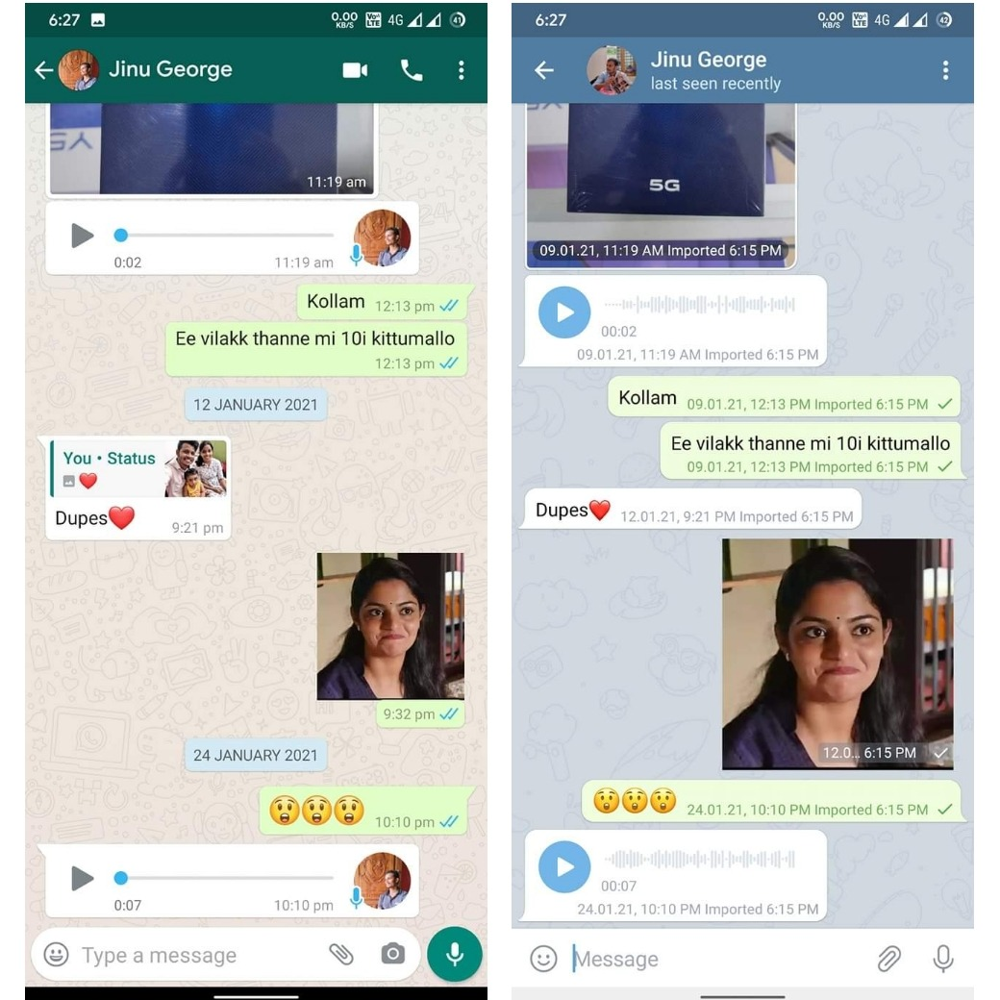

Export & Import chats from other messaging apps 😌
Telegram 7.4 (beta)
അങ്ങനെ അതിനും ഒരു പരിഹാരമായി 😁
ഇനി മുതൽ WhatsApp പോലുള്ള IM ആപ്പുകളിൽ നിന്നും ചാറ്റുകൾ ടെലിഗ്രാമിലേക്ക് import ചെയ്യാം.
വാട്സാപ്പിൽ നിന്ന് ടെലിഗ്രാമിലേക്ക് switch ചെയ്യുന്നവർക്ക് പഴയ വാട്സാപ്പ് ചാറ്റ് ടെലിഗ്രാമിൽ continue ചെയ്യാം.
മാത്രമല്ല, നിങ്ങളുടെ പ്രധാനപ്പെട്ട പഴയ ചാറ്റുകൾ വേണമെങ്കിൽ ടെലിഗ്രാമിന്റെ encryption ൽ സൂക്ഷിക്കുകയും ചെയ്യാം. 😉
WhatsApp ലെ 3 dot menu ൽ നിന്ന് export chat തിരഞ്ഞെടുക്കുക, with or without media സെലക്ട് ചെയ്യുക, export ആവുന്ന ഫയൽ ടെലിഗ്രാമിലെ ചാറ്റിലേക്ക് share ചെയ്യുക.

Pic 1: Original WhatsApp chat
Pic 2: Imported chat in Telegram
ഗ്രൂപ്പ് ചാറ്റോ പേഴ്സണൽ ചാറ്റോ എന്തും ആവട്ടെ... ഇങ്ങനെ import ചെയ്യാവുന്നതാണ്!
NB: Share ചെയ്യുന്നത് private ചാറ്റിലേക്ക് ആണെങ്കിൽ അയാൾ mutual contact ആയിരിക്കണം.
നമ്മുടെ ടെലിഗ്രാമിലെയും വാട്സാപ്പിലെയും name ഒരേപോലെ ആണെങ്കിൽ മാത്രേ നമ്മുടെ messages ഇതുപോലെ right side ൽ വരൂ.
Telegram is ❤️🔥
കൂടുതൽ വായിക്കാം...